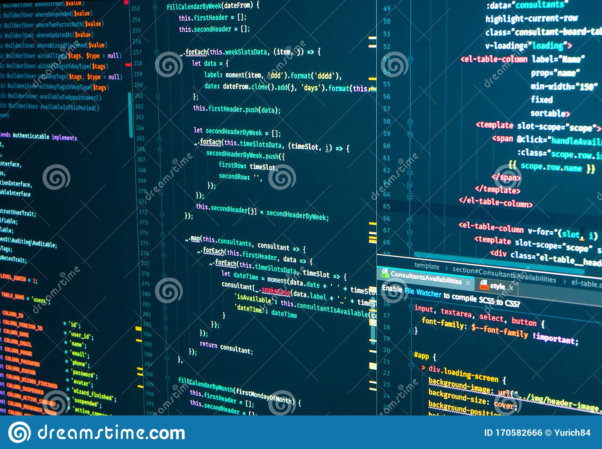

TechAcademy
TECHACADEMY is a learning platform which was created by JCI IKEJA
It was created to develop individuals in the programming world
Techacademy is one of the ways JCI gives back to its nearest community
COURSES AVAILABLE
WEB DEVELOPMENT
Web development refers to building, creating, and an maintaining websites. It includes aspects such as web design, web publishing, web programming, and database management. While the terms "web developer" and "web designer" are often used synonymously, they do not mean the same thing
UI/UX DESIGN
User interface design, or UI design, is the design of interfaces that focus on usability and efficiency for the user. This practice usually refers to the design of graphical user interfaces (or “GUI”) for software and machines, but can also refer to other types of interaction like voice user interfaces.
DESIGN THINKING
Design thinking is an approach to innovation that draws from the designer's toolkit to integrate the needs of people; the possibilities of technology; and the requirements for business success.

I am greatful to JCI Ikeja for making this possible